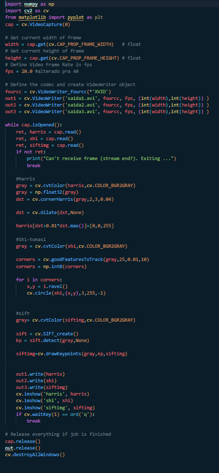
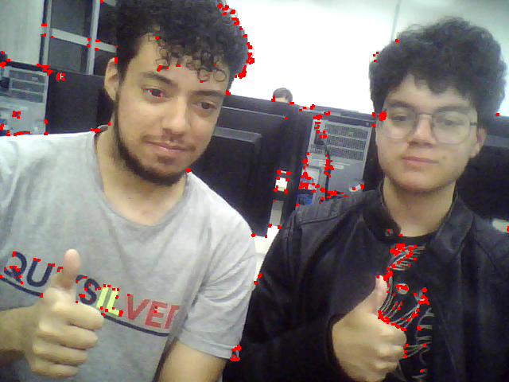
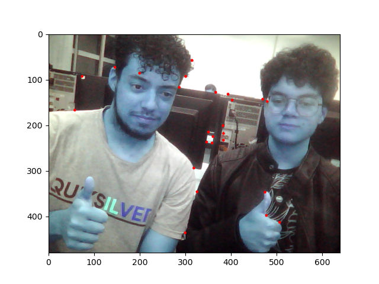
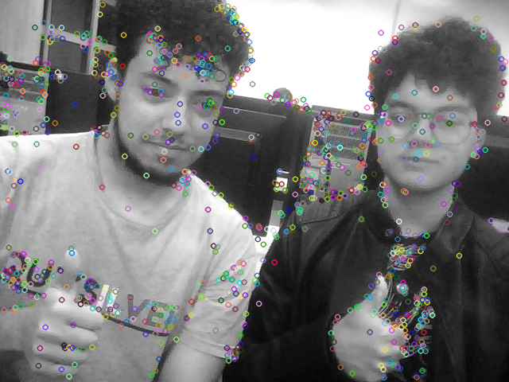

Introdução
O experimento a seguir busca estudar e explorar a teoria da detecção de features em cenários, abordando também sua aplicação prática através de bibliotecas do OpenCV.
Objetivos
- Compreender a teoria da detecção de features e seus diferentes métodos
- Aplicar o conhecimento na prática com OpenCV
- Experimentar outras funcionalidades
Fundamentos básicos
Features, assim como explicado nesse *website*, são características de uma imagem que se destacam das demais, sendo possível determinar o local da imagem a qual tal característica se refere. Features foram um conceito importante para a criação de outros mecanismos de detecção na computação, como é o caso dos estudados abaixo. Na computação visual, cantos podem ser definidos como regiões da imagem com grande variação de intensidade em todas as direções.
Através dessas features, duas pessoas, *Chris Harris e Mike Stephens*, foram capazes de criar um algoritmo capaz de detectar a borda de objetos presentes em imagens. Para tal, eles formularam uma equação que encontra a diferença de intensidade em todas as direções em uma figura. A partir dessa equação, foi elaborada outra que dá a magnetude desses valores, valores esses que são utilizados pelo programa para determinar se tal região da imagem é uma aresta, um canto ou uma região plana.
Outro algoritmo semelhante ao anterior é o detector de cantos *Shi-Tomasi* , onde duas pessoas, Shi e C. Tomasi, buscaram melhorar a detecção de cantos de Harris. Com a função da biblioteca do OpenCV, é possível, além de detectar as bordas, definir a quantidade de detecções desejada e a qualidade das mesmas, ou seja, o usuário pode escolher entre detectar as n melhores curvas, onde n é a quantidade de curvas.
Já o *SIFT* foi criado para a detecção de curvas em imagens dimensionadas, como por exemplo, que tenham sofrido com zoom. O OpenCV possui uma função SIFT que detecta pontos-chave de uma imagem, que são estruturas especiais que possuem muitos atributos como suas coordenadas (x,y), tamanho da vizinhança significativa, ângulo que especifica sua orientação, resposta que especifica a força dos pontos-chave, etc.
Materiais e métodos
- Ubuntu
- Miniconda
- Python
- OpenCV
- Webcam
1)
Aqui, a partir dos algoritmos disponíveis nos sites acima e da biblioteca OpenCV, foi criado um único algoritmo que recebe uma imagem (filename), realizada a detecção de bordas Harris, Shi-Tomasi e SIFT, e devolve três imagens, cada uma com um método diferente aplicado. As funções Harris e SIFT utilizam o imwrite para gravar as imagens geradas, como o método Shi-Tomasi gera um gráfico, é necessário usar a função plt.savefig antes do plt.show, pois esta ultima apaga a imagem gerada.

2)
Do mesmo modo, foi criado um único algoritmo que grava 3 vídeos com os 3 métodos diferenets aplicados em tempo real a partir do quarto algoritmo do relatório 1. É necessário criar uma entrada de vídeo para cada método.
Resultados e análise
1)
Imagem original retirada do laboratório 4.

Imagem onde foi aplicada a detecção Harris Corner. Como se trata de uma imagem com muitos detalhes, é possível notar algumas inconsistências nos pontos detectados. No entanto, é possível notar que o algoritmo detectou com êxito bordas mais definidas, como nas estampas das camisetas.
Imagem onde foi aplicada a detecção Shi-Tomasi. Esse método é, teoricamente, mais bem apurado que o primeiro. É possível notar que, assim como o programa definiu, só foram detectadas 25 boras, as quais o programa determinou como sendo as melhores. Embora o programa leve em conta diversos parâmetros para tal, é possível notar que bordas bem definidas, como as da estampa da camiseta, não foram detectadas, podendo ser percebido que ele focou em pontos onde ocorre uma grande transição de coloração dos pixels.
Imagem onde foi aplicada a detecção SIFT. É possível notar que grande parte dos pontos-chave detectados estão em regiões com maior quantidade de detalhes, como os rostos. Superfícies com menos detalhes, como as partes sem estampa das camisetas, apresentaram menor densidade de pontos-chave.
2)
Aqui é possível notar a grande densidade de pontos na saída de ar do computador, ocasionado pela grande quantidade de transições entre duas colorações de pixels muito distintas.
Embora tenha ficado pouco visível, é possível notar que as regiões estáticas do vídeo foram priorizadas pelo programa, sendo também pontos onde ocorre uma maior transição da coloração dos pixels.
De modo semelhante, aqui é possível notar que regiões com menor densidade de pixels com colorações diferentes apresentam menos pontos-chave, enquanto a blusa, região com muitos detalhes, apresenta alta densidade de pontos-chave.
Conclusões e Comentários finais
Neste laboratório foram estudados conceitos muito interessantes sobre a detecção de features em imagens através de funções do OpenCV. O método Harris demonstrou muita poluição visual nas imagens geradas, enquanto o método Shi-Tomasi apresenta uma consistência maior. Todos os métodos são um interessante estudo de como o cérebro humano se comporta para a detecção de características distinguíveis em uma imagem, podendo mostrar o que mais chama a atenção de alguém em uma figura.